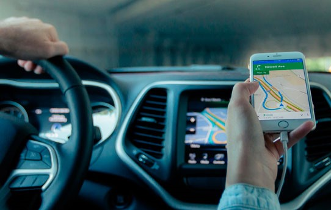
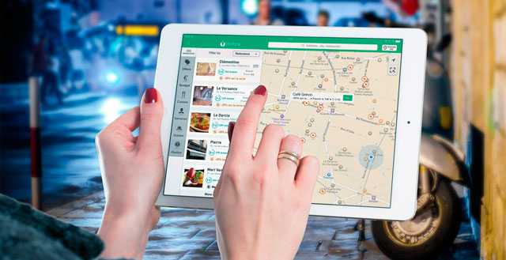

Today global market starts to experience a real GPS technology boom. The use of satellites for navigation becomes more and more popular among car owners, and those who have big automobile businesses. What are the features of this technology? What benefits it can propose to the transportation industry? This system works as follows: user (sometimes it is not a driver) places special GPS-receiver in a vehicle. This receiver connect with a common mobile phone. After installation of both devices all the necessary information about car location and its route transmits to a computer (or a company server if we are talking about business) via satellite. This means we can easily run GPS monitoring right from the house or working place.
Software Development (web, IOS, and android)

How To Build a GPS Tracking System
Сar tracking system usually consists of the following components:
Mobile module. It can consist of two devices (receiver+phone) or a single one GPS tracker;
Adapter;
Power supply;
Box for the module sealing;
Software for the data analysis;
Сomputer (server);
Network connection;
For business – operator or assistant (A specialist who knows how to assemble or disassemble GPS system on a truck correctly).
Module (GPS tracker). A mobile module that consists of a satellite receiver and data storage unit. GPS trackers usually have a 5-second recording rate at which they can track the car movement within 180 hours (more than 7 days). Power supply. GPS is powered by a built-in or removable battery. The ability to use additional(removable) batteries is preferable, because it will help to avoid a lot of problems connected with the built-in battery failure. This is a significant advantage, and preference should be given to such GPS trackers. But even in the case of external power source, GPS tracker will operate not longer than a few hours. For stable operation without any failures GPS unit need to be conencted to the car onboard network via adapter. Therefore, the car adapter is mandatory item in your GPS system. All connections to the onboard network need to be protected from accidental or intentional disconnection. To improve the reliability of the connection it must be soldered and have only one connector – inside the sealed box. To complicate the disconnection, soldered point must be located at a hard-to-reach spot so even the driver wouldn’t know about its location (business case). Connection should be provided via a fuse in that network region where voltage does not depend on the position fo the ignition key.

The container for the mobile unit sealing. Sealing box must meet the following requirements:
Transparency. For the visual estimation of the GPS status;
Rigidity. To ensure the impossibility of pressing GPS control buttons;
The ability to provide secure connection of an auto adapter and power chords inside sealed box;
Place for power cable which comes from an onboard network;
Ability to secure the container in the vehicle cabin;
Reliable lock which will prevent inadvertent opening of the container during shaking;
Place for seal placement.